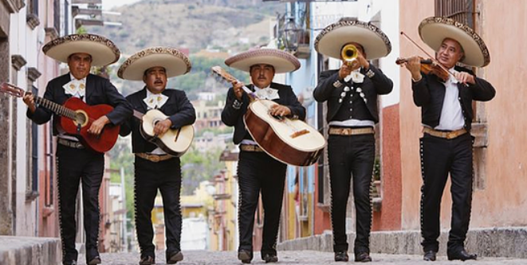
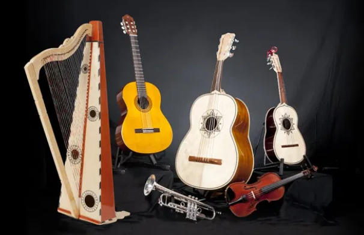

Musica Tradicional mexicana
La musica tradicional de Mexico es el Mariachi. Esta musica proviene de las provincias de Colima, Jalisco, Michoacán, Nayarit y zonas aledañas. Los istrumentos que lo componene son violínes, guitarra de golpe, vihuelas, arpa, contrabajo. Ademas, como parte de la cultura, es una tradicion que las personas que tocan esta musica utilizen una vestimenta colorida con distintos detalles. A continuacion pueden ver imagenes de los instrumentos y la vestimante.
Galeria:
Grupo de mariachi
Instrumentos de mariachi